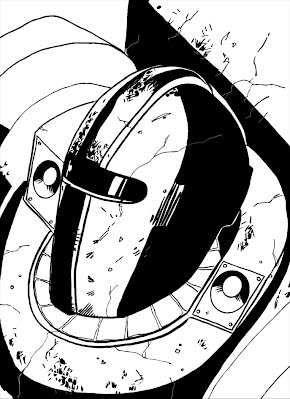
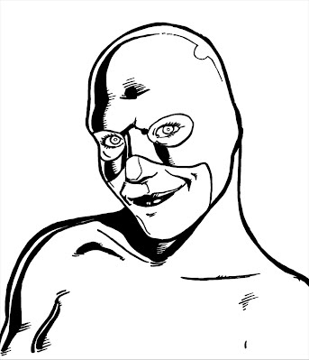

GADGETS & GEARFrom blaster rifles to anti-gravity belts, teleportation rings, and battlesuits, heroes and villains develop all manner of gadgets. Villains are forever coming up with doomsday machines and fiendish deathtraps while heroes use all sorts of gear to aid them in their fight for justice. This section looks at various sorts of devices and equipment game terms. It also describes vehicles, headquarters, and constructs, ranging from zombie minions to giant robots. DEVICESUnder the Hood: Devices vs. Equipment
There can sometimes be a fine line between devices (Removable powers) and equipment (relatively mundane technology). The primary differences are: Devices are part of the character's traits. They grant effects beyond the capabilities of normal equipment, and they're only ever lost or taken away temporarily. If an item is integral to the character's concept or abilities, it's probably a device. Equipment, on the other hand, is limited to fairly "mundane" things, can be taken away or even destroyed with impunity, and merely supplements the character's traits. Equipment doesn't grant "powers" per se (although equipment does provide certain effects). If the effect isn't removable at all then it is a power (neither device or equipment). Another important distinction between device and equipment is descriptors. Something described as magical in nature can't also be a "mundane commonly available item" unless the setting has magic as a common commodity. Ultimately, it is up to the GM whether or not a particular item is considered a device or equipment (or neither), depending on the nature of the series and the characters. Here are some examples of devices vs. equipment:
A device is an item that provides a particular power effect or set of effects. While devices are typically creations of advanced science, they don't have to be. Many heroes and villains have magical devices such as enchanted weapons and armor, magical talismans, wands and staves of power, and so forth. Some devices are products of alien technology so advanced they might as well be magical, or focuses of psychic or cosmic power beyond the understanding of both magic and science. All devices work the same way in game terms, regardless of their origin or descriptors. Generally speaking, devices are powers with the Removable flaw applied to them (see Removable in Powers), meaning the power is external to the character. Take away the device, and the wielder loses the ability to use those powers. So if an armored hero loses access to his battlesuit, for example, he also loses access to the powers tied-up in it. The same is the case of a hero loses a cosmic ring, magic helmet, or alien artifact, which is why Removable is a flaw for those powers. Just like other powers, devices cost Character points (albeit reduced some by the Removable flaw). Characters who want to have and use a device on a regular basis have to pay Character points to have it, just like having any other power. The device becomes a part of the character's abilities. If the device is lost, stolen, or destroyed, the character can replace it, given time, since the device is considered a permanent part of the character. Only a reallocation of the character's Character points will change this, and Gamemasters should allow characters to reallocate Character points spent on a Removable power if it is somehow permanently lost. In other cases, characters may make temporary use of a device. Most devices are usable by anyone able to operate them, in which case characters may loan devices to each other, or may pick up and use someone else's device (or even steal a device away from someone in order to use it against them). The key concept here is the use of the device is temporary, something that happens during a single scene or, at most, a single adventure. If the character wants to continue using the device beyond that, he must pay Character points to make the device part of his regular abilities. Otherwise the GM can simply rule that the device is lost, reclaimed by its owner, runs out of power, breaks down, or whatever, and is therefore no longer accessible. Characters with the Inventor and Artificer advantages can create temporary devices for use in an adventure. Gamemasters may require characters to spend a Victory point to make temporary use of a device that doesn't belong to them, similar to performing a power stunt without suffering fatigue. This helps to limit the loaning and temporary use of devices. BATTLESUITS

A common staple of comic books is the battlesuit, also known as power-armor. It is an advanced suit of technological (sometime magical) armor, giving the wearer various powers. Battlesuits commonly grant the following powers: Armor: Protection is the foundation power for a battlesuit. Whether it is armor plating, metallic mesh, flexible ballistic material, or some combination of these and other cuttingedge technologies, a battle-suit protects its wearer from damage. Some battle-suits provide Impervious Protection and some have Sustained Protection in the form of built-in force fields or the like. Attacks: Battlesuits are typically equipped with some kind of weapon or weapons, based around various attack effects, particularly Damage. A battlesuit with an array of weapons may have a primary attack effect and several others as Alternate Effects (see the Alternate Effect modifier in Powers). Immunity: A part of the protection a battlesuit offers is a sealed environment, offering Immunity to various conditions and hazards. Movement: After defense and offense, battlesuits typically allow the wearer to get around, whether it's hydraulic-assisted Leaping, boot-jets or anti-gravity repulsion for Flight, turbines for Swimming, or some other movement effect. Sensors: Battlesuits often come equipped with a suite of sensors providing Senses. Darkvision, direction sense (possibly from a global positioning system), infrared vision, radio, time sense (from a chronometer), and ultra-hearing are all common battlesuit sensors. Strength: A battlesuit might have servomotors or other mechanisms to magnify the wearer's Strength. This is typically a combination of Enhanced Strength and Limited ranks of Enhanced Strength to increase sheer lifting ability. COSTUMES

In addition to being stylish, costumes may be padded and armored making them tougher than ordinary clothing, allowing them to provide a Protection effect. Costumes may have other properties and can even be the source of a hero's powers, such as in the case of battlesuits (previously). Normally clothing is never damaged to the point of indecency. Often powers will cause little (if any) damage to their clothing despite being normal attire. Clothes don't burn, tear, or otherwise suffer damage when the wearer changes size or shape, bursts into flames, freezes, and so forth. The GM can assume this is a property of the universe: it costs no points, since everyone is affected. In a more realistic setting, Gamemasters may wish to make Immunity to wearer's powers a 1-point feature and require characters to pay for it if their characters have such a costume. Otherwise characters have to make do with ordinary clothing (which may be damaged or destroyed when they use their powers or during combat). ENHANCED EQUIPMENTSome devices are otherwise normal equipment with special properties. Magical items, normal equipment imbued with magical properties, are examples. Magical weapons may have greater damage bonuses or grant attack bonuses while magical armor imposes no penalties and provides greater protection. Such enchantments move archaic weapons and armor from the realm of mundane equipment to devices. The same is true of equipment using super-alloys, bulletproof cloth, and other wonders of super-science. WEAPONSWeapons are common devices, ranging from super-powered versions of ordinary weapons like swords, bows, or guns (see Enhanced Equipment) to more exotic weapons like magic wands or alien power rings. A weapon device usually has one or more attack effects but may provide virtually any effect the player wants to include. Weapons often have several different attacks as Alternate Effects. One example is an array of magic rings, each with its own effect, but only usable one at a time. OTHER DEVICESThe full range of devices characters can create and use is limited solely by your imagination. Essentially any item with a power is considered a device. Players and GMs may well come up with devices beyond those described here. Use the guidelines here and in Powers to handle any new devices and their capabilities. INVENTINGCharacters with the Inventor advantage can create inventions, temporary devices. To create an invention, the inventor defines its effects and its cost in Character points. This cost is used for the necessary skill checks, and determines the time required to create the invention. Inventions are subject to the same power level limits as other effects in the series. DESIGN CHECKFirst, the inventor must design the invention. This is a Technology skill check the GM should make in secret. The DC is equal to the invention's total Character point cost, including all modifiers except Removable, which does not apply to inventions, as they are temporary by nature. Designing an invention requires an hour's work per Character point of the invention's cost. You can make a routine check to design an invention. You can reduce the rank of the design time, taking a -2 circumstance penalty on the check for each -1 time rank reduction. Design Check DC = invention's point costIf the check is successful, you have a design for the invention. If the check fails, the design is flawed and you must start over. With three or more degrees of failure, the designer is not aware of the design flaw; the design seems correct, but the invention won't function (or at least won't function properly) when it's used. For this reason, the GM should make the design check secretly and only inform the player whether or not the character appears to have succeeded. CONSTRUCTION CHECKOnce the design is inhand, the character can construct the invention. This requires four hours of work per Character point of the invention's cost, so an invention costing 10 points takes 40 hours (about a week's work normally, or working two days straight without rest) to construct. When the construction time is complete, make a Technology skill check. The DC is equal to the invention's Character point cost and you can make it as a routine check. You can reduce the rank of the construction time, taking a -2 circumstance penalty on the check for each -1 time rank reduction. Construction Check DC = invention's point costSuccess means the invention is complete and functional. Failure means the invention doesn't work. Three or more degrees of failure may result in a mishap, at the GM's discretion. USING THE INVENTIONOnce the invention is complete, it is good for use in one scene, after which it breaks down or runs out of power. If the character wishes to use the invention again, there are two options. The first is to spend the necessary Character points to acquire the invention as a regular power, part of the character's traits; in this case, the device qualifies for the Removable flaw and, once purchased, can be used again like any power. The other option is to spend a Victory point to get another one-scene use out of the invention. Each use costs an additional Victory point, but doesn't require any further skill checks. Although it's possible to prepare certain one-use devices in advance, the GM should require the player to spend a Victory point to have a particular previously constructed invention conveniently on-hand during an adventure. Example: Your hero needs to whip up a mind-shielding device to confront the bad guy, who has seized control of his teammates. 1 Rank of Resistance to Mind Control cost 3 Character points, so the Technology check is DC 3 and takes 3 hours. Your hero's skill bonus is +5, so he succeeds automatically. The construction check is also DC 3 (the device's cost). It takes 12 hours. Your hero again succeeds automatically on the check. However, that's 15 hours total to build the mind-shield, and the bad guy plans to send his new "puppets" into action in just a few hours. Even taking a -6 check penalty to cut the time to one-eighth only takes it down to just over three hours. Your hero needs that device right now, so he's going to need to speed things up... JURY-RIGGING DEVICESAn inventor can choose to spend a Victory point to jury-rig a device; ideal for when a particular device is needed right now. When jury-rigging a device, skip the design check and reduce the time of the construction check to one round per Character point of the device's cost, but increase the DC of the check by +2. The inventor makes the check and, if successful, has use of the device for one scene before it burns out, falls apart, blows up, or otherwise fails. You can't jury-rig an invention as a routine check, nor can you speed up the process any further by taking a check penalty. You can use a jury-rigged invention again by spending another Victory point. Example: Needing to get the mind shield device ready right away, you decide to spend a Victory point to jury-rig it. You skip the design step altogether and reduce construction time to 3 rounds (18 seconds). The DC of the construction check increases to 5, but still well within your hero's skill; you only needs to roll a 0 or better. You roll a 6 on the check and, half a minute later, you have a makeshift mind-shield you hope will protect your hero from the bad guys power long enough to try and free his teammates from the villain's influence. MISHAPSAt the GM's discretion, three or more degrees of failure, or a natural roll of -3, on any required inventing skill check may result in some unexpected side-effect or mishap. Exactly what depends heavily on the invention. Inventing mishaps can become a source of adventure ideas and put the heroes in some difficult situations. They may also be setbacks, suitable for Victory point awards. MAGICAL INVENTIONSFor magical, rather than technological, inventions, use the normal inventing rules, but substitute the Expertise: Magic skill for the Technology skill on the design and construction checks. For the sake of description this can also be called a Magical Ritual: pouring over ancient scrolls and grimoires, drawing diagrams, casting horoscopes, meditating, consulting spirit-guides, and so forth. Note that the final product still needs to be removable (a device) such as being placed on a totem or talisman. AVAILABLE EQUIPMENTWHAT ITEMS DO YOU PAY FOR?Just because a character happens to own a cell phone, laptop computer, car, or a home does not mean the character is expected to have ranks in the Equipment advantage. Broadly speaking, characters are only expected to pay for adventuring equipment, which is to say items that have a direct impact on their roles as heroes. The rest is just background color, perhaps encompassed by ranks in the Benefit advantage for heroes with a lot of wealth and material resources. So, for example, a hero pays no equipment points for the fact that, in his secret identity, he lives in a nice apartment or owns a computer and a cell phone. He does, on the other hand, pay equipment points for a hidden fortress or high-tech lair, where he keeps various dangerous items and trophies collected over his career. Likewise, a hero with Benefit ranks reflecting great personal wealth pays no equipment points for a sprawling mansion or penthouse apartment, nor for a collection of classic sports cars. She does pay equipment points for things like smoke bombs, boomerangs, and other weapons and crimefighting tools, as well as for a hidden base of operations or souped-up vehicles used in costume. As with many cases, when in doubt, the Gamemaster can make a ruling whether or not a particular item should count as equipment. If it is something the character regularly uses as part of his or her heroic identity, then it probably should. If a player wants to bring some cost-free background element to bear on the adventure in an important way, the GM can assess a Victory point cost to do so. See Victory points for more information. EQUIPMENT COSTEquipment is acquired with points from the Equipment advantage. Each piece of equipment has a cost in points, just like other traits. The character pays the item's cost out of the points from the Equipment advantage and can thereafter have and use that item. EQUIPMENT EFFECTS AND FEATURESAn item's cost is based on its effects and features, just like a power (see Powers for more information), so a ranged weapon has a cost based on its Ranged Damage rank. Equipment often provides the Features effect, including some specific equipment Features. Indeed, some items of equipment provide only Features. ALTERNATE EQUIPMENTJust as with power effects, there is a diminishing value in having multiple items with a similar function, or a single piece of equipment with multiple functions, usable only one at a time. Equipment can have the Alternate Effect modifier (see Extras section of Powers), such as a weapon capable of different modes of operation, or a reconfigurable tool. Characters can also have Alternate Equipment, an array of items usable only one at a time. This is typically a multi-function item, or a kit or collection of various smaller items. The classic example is the utility belt (see its description later in this section). Alternate Equipment can also include things like an arsenal of weapons the character can swap out, providing different sets of weapons, with only a limited number usable at once. ON-HAND EQUIPMENTCharacters may not necessarily carry all their equipment with them at all times. The GM may allow players to spend a Victory point in order to have a particular item of equipment "on-hand" at a particular time. This is essentially an equipment "power stunt"--a one-time use of the item for one scene--and the Gamemaster rules whether or not having a particular item on-hand is even possible. For example, a hero out for an evening in his secret identity might have something like a concealed weapon or other small item on-hand, but it's unlikely the character is carrying a large weapon or item unless he has some means of concealing it. RESTRICTED EQUIPMENTThe Gamemaster may rule some equipment is simply not available or that characters must pay for an additional Feature (or more) in order to have it. This may include certain kinds of weapons, vehicles, and anything else the GM feels should be restricted in the series. DAMAGING EQUIPMENTMost equipment can be damaged like other objects (see Damaging Objects), based on its Toughness. Equipment suffering damage loses some effectiveness. The item loses 1 Feature or suffers a -1 circumstance penalty on checks involving it each time it is damaged. These penalties are eliminated once the item is repaired. REPAIRING AND REPLACINGRepairing an item requires a Technology check. You can also affect jury-rigged repairs to temporarily restore the item to normal (see Technology in Skills ). UNLISTED EQUIPMENTNot every possible equipment is listed on this page. Feel free to use Feature or other powers to make equipment. However the equipment should be inspected by the Gamemaster to determine if it should instead be a device. For example armor with Protection 2 is acceptable because it is between 2 example equipment armors. A sword of Damage 2 or 4 can be justified as low or high quality. However a Knife of Damage 3 needs to instead be a sword and Damage 10 would need to be a device. Also see the side bar "Devices vs. Equipment" at the top of page. EQUIPMENT LIMITATIONSUnder the Hood: Ammo, Batteries, And Charges
Lots of equipment has a limited lifespan: guns run out of ammo, cars run out of gas, SCUBA tanks run out of oxygen, and batteries run out of juice. However, it can be a hassle to keep track of the lifespan of every piece of equipment the heroes may have (to say nothing of all the villains and supporting characters). So these rules pay fairly little attention to equipment running out or breaking down except when the Gamemaster wants to make things interesting for the heroes with a complication or two. Thus equipment failure--either due to running out of fuel or simple malfunction--is a dramatic issue rather than a matter of cost-accounting and keeping track of things like ammo and how much gas is in the tank of the hero's super-car. The material in this book assumes equipment and devices have effectively unlimited use, except when the GM declares a complication, and that heroes properly maintain, charge, reload, and refuel their gear "off-panel" in between the scenes of an adventure, unless the Gamemaster dictates otherwise. Replacing damaged or destroyed equipment requires only time and resources, although the GM has the final say as to how much time. It's easy to replace a lost item when the store is right around the corner, harder when it's the middle of the night or you're out in the middle of nowhere, or the item is restricted in some fashion. Gamemasters can allow players to spend a Victory point to have a replacement for a piece of equipment as an on-hand item (see On-Hand Equipment, previously). In addition to their amazing devices, characters often make use of various mundane equipment--ordinary things found in the real world--ranging from a simple set of tools to cell phones, laptop computers, and even common appliances. These items are known as equipment to differentiate them from devices. THE LIMITS OF EQUIPMENTWhile equipment is useful it does have its limits, particularly when compared to powers or devices. Equipment is less expensive--it's cheaper to have a handgun than a Damage power or even a super-science blaster weapon--but equipment is also more limited. Keep the following limitations of equipment in mind. TECHNOLOGICAL LIMITSEquipment includes only items and technology commonly available in the setting. The GM decides what is "commonly available," but as a rule of thumb assume equipment only includes things from the real world, not battlesuits, anti-gravity devices, shrink rays, and so forth. Those are all devices (see Devices). AVAILABILITYOwnership of some equipment is restricted and the GM decides what is available in the setting. For example, guns may require permits, licenses, waiting periods, and so forth. Also, equipment can be bulky and difficult to carry around. Gamemasters are encouraged to enforce the limitations of carrying a lot of equipment at once. Players who want to have an unusual item of equipment on-hand must either remember to bring it along or use the guidelines for on-hand equipment. Devices are not so limited and characters are assumed to have an easy means of carrying and transporting them. BONUS STACKINGEquipment bonuses are limited compared to the bonuses granted by other effects. Generally, they do not stack with each other or other types of bonuses, only the highest bonus applies. Thus a hero with a high Protection bonus doesn't get much, if any, advantage from wearing a bulletproof vest. The only exception to this is Strength-based weapons, and there are limits on them as well (see Melee Weapons). NO EXTRA EFFORTUnlike devices, you do not have the choice of suffering the strain of extra effort when improving equipment, the equipment always takes the strain. You can push your equipment to the limit (eventually causing it to fail) but trying real hard on your part isn't going to make your car go faster or your gun more effective. You also can't use extra effort to perform power stunts with equipment. instead, you must spend a Victory point to do so. The GM can always disallow extra effort with equipment if the item is one that is not capable of exceeding its normal operating limits. DAMAGE AND LOSSEquipment is subject to damage, malfunctions, and loss, even more so than devices with the Removable flaw (see the flaw description in Powers). Equipment may be lost or taken away from the character with impunity, and the GM may have equipment fail, run out of ammo or fuel, or otherwise malfunction as a complication. GENERAL EQUIPMENTMost items of general equipment provide Features or other comparatively minor effects. Each of the following items is a rank 1 Feature, costing 1 point, unless specified otherwise. ELECTRONICSComputers and electronics are common in the modern world. Gamemasters should note most of these devices are fairly delicate (Toughness 4 or less) and affected by electricity, radiation, and powerful magnetic fields, which can short them out entirely. Camera: A digital or film camera for taking still images. Most cameras have a capacity of 24 or 36 images and you can use one in conjunction with appropriate Expertise skills, such as photography. Cell Phone: A small handheld or headset unit for communication. The battery lasts for approximately 24 hours before it needs to be recharged. For an extra point, a phone can have most of the capabilities of a computer, at least with regard to accessing the Internet and providing data. Commlink: A tiny buttonsized device for radio communication with an effective range of about a mile (longer if patched into the cellular network or a similar network). Many hero (and villain) teams use commlinks. Computer: A computer includes keyboard, mouse, monitor, printer, modem, and other standard peripherals, and may include things like a scanner at the GM's discretion. Audio Recorder: These tiny digital recorders (about the size of a deck of playing cards) can record up to eight hours of audio and can be connected to a computer to download the digital recording. Video Camera: A hand-held camera that records video and audio on tape or digitally, with a capacity of about 6 hours of footage. Video cameras cost 2 points, since they effectively double as audio recorders as well. CRIMINAL GEARThis equipment is most often used by criminals or to catch criminals. Handcuffs: Handcuffs are restraints designed to lock two limbs--normally the wrists--of a prisoner together. They fit any medium or small humanoid. Handcuffs can only be placed on a defenseless or unresisting target. Steel cuffs have Toughness 9 and are DC 10 to escape using Sleight of Hand (or Technology to pick the lock). Lock Release Gun: This small, pistol-like device automatically disables and opens cheap and average mechanical locks operated by standard keys as a routine check. It does not affect other locks. Restraints: Similar to handcuffs are plastic restraints, used in cases where authorities need to restrain a large number of people and cuffs are impractical. They are generally Toughness 5 or so and DC 10 to escape with Sleight of Hand but cannot be removed except by cutting or breaking them. SURVEILLANCE GEARHeroes often use surveillance gear to keep tabs on criminals and their activities. Binoculars: Standard binoculars allow the user to make visual Perception checks at a greater distance, or with a reduced penalty for distance, effectively providing a +2 equipment bonus that overcomes some or all of the distance penalty. Concealable Microphone: A tiny receiver usable as a listening device. It has a broadcast range of about a mile. It requires an Investigation or Perception check against the results of the Sleight of Hand check used to conceal the microphone to find it. Mini-Tracer: A tiny radio transmitter with an adhesive backing. It requires a successful attack check to plant a tracer on a target (or a Sleight of Hand check to plant it outside of action time). Noticing the tracer is a DC 10 Perception check or the result of the character's Sleight of Hand check, whichever is higher. The tracer has a transmission range of about 2 miles. Night Vision Goggles: Night vision goggles use passive light gathering to improve vision in near-dark conditions. They grant the user darkvision--but because of the restricted field of view and lack of depth perception these goggles provide, they impose a -1 circumstance penalty on Perception checks made while wearing them. Night vision goggles must have at least a little light to operate. A cloudy night provides sufficient ambient light, but a pitch-black cave or a sealed room doesn't. For situations of total darkness, the goggles come with an infrared illuminator that, when switched on, operates like a flashlight visible only to the wearer (or anyone else with IR vision). Parabolic Microphone: This apparatus has a gun-like microphone with an attached set of headphones. A parabolic mike provides a +2 equipment bonus to listening perception checks that overcomes some or all of the penalty for listening to sounds at a distance, through walls, etc. SURVIVAL GEARCamo Clothing: Clothing in the right camouflage pattern for the environment grants a +2 equipment bonus on Stealth checks in that environment. Patterns include foliage, desert, urban, and arctic. Flash Goggles: These tinted eye-coverings provide protection against blinding light, granting a +2 equipment bonus to defense checks against visual Dazzle attacks involving bright light. Flashlight: Flashlights negate penalties for darkness within their illuminated areas. The standard flashlight projects a beam 30 feet long and 15 feet across at its end. Fire Extinguisher: This portable apparatus uses a chemical spray to extinguish small fires. The typical fire extinguisher ejects enough extinguishing chemicals to put out a fire in a 10-by-10-foot area as a move action. It contains enough material for two such uses. Gas Mask: This apparatus covers the face and connects to a chemical air filter canister to protect the lungs and eyes from toxic gases. It provides immunity to eye and lung irritants. The filter canister lasts for 12 hours of use. GPS:Global positioning system receivers use signals from GPS satellites to determine the receiver's location to within a 50 foot radius. A GPS receiver has the following powers (5 points total): Attain Knowledge (2 point base) linked with Find the Path (2 ranks), Entire Path, limited to being on Earth with a satellite connection (-1 flaw). It also has the following Features (4 points total): estimated arrival time based on current speed, maps available, can connect to a database of commonly useful categories of locations such as gas station or hospital, and coordinate information always includes longitude, latitude, and altitude (this coordinate information is a single feature). The GPS receiver has the following Quirks (-3 points total): does not know the name or address of any location that has not been officially mapped (this means that it must be along a road), can't locate places that are well known (you must save the location), takes a move action to be turned on (see Activation flaw). The total is 6 equipment points and has Easily Removable which doesn't change equipment costs. The GPS receiver can only locate places based on the address (including intersections), latitude and longitude, business name, or using the feature for category. Using the category feature provides the list sorted from closest to farthest. The GPS takes a standard action each round to updates path and coordinate information however it can't take any other actions. Find the Path has 2 ranks because with the limitation it costs 1 point per 2 ranks. A robotic construct or vehicle may have a GPS built in (making it non-removable) for the normal cost (6 equipment points). Multi-tool: This device contains several different screw-drivers, a knife blade or two, can opener, bottle opener, file, short ruler, scissors, tweezers, and wire cutters. The whole thing unfolds into a handy pair of pliers. A multi-tool can lessen the penalty for making skill checks without appropriate tools to -1 instead of the normal -2. The tool is useful for certain tasks, as determined by the GM, but may not be useful in all situations. Rebreather: A small cylinder that fits over the mouth and provides two minutes (20 rounds) of oxygen, during which the character does not need to make suffocation checks. SCUBA Gear: A back-mounted oxygen cylinder and face-mask, used for diving. SCUBA (Self-Contained Underwater Breathing Apparatus) gear provides two hours of oxygen, and characters using it do not need to make checks for suffocation unless the gear is damaged or disabled. UTILITY BELTA common piece of equipment for crime fighters and espionage agents is the utility belt (or bag, pouch, backpack, etc.): a collection of useful tools and equipment in a compact carrying case. Some characters may have a Removable array of devices instead, allowing for far more unusual effects than run-of-the-mill equipment. Heroes often have 1-point items in their utility belts, like flashlights, rebreathers, and so forth. By spending Victory points you can temporarily add Alternate Equipment to your utility belt as a power stunt, for those one-time items you may need in a pinch. SAMPLE UTILITY BELTFeel free to modify this example (adding or omitting items) to create your own customized utility belts. Brass Knuckles: Damage 1, Strength-based • 1 point. Bolos: Snare 3 (Hindered and Vulnerable, Defenseless and Immobilized) Alternate Resistance (+1): Sleight of Hand: Escaping instead of Fortitude or Will • 12 points. Boomerangs: Ranged Damage 1, Strength-based • 2 points. Cutting Torch: Damage 1 Linked to Weaken Toughness 1 Affects Objects Only. • 2 points. Explosives: Ranged Burst Area 1 Damage 5 • 15 points. Flash-Bangs: Ranged Burst Area 1 Visual and Auditory Dazzle 4 (Resisted by Fortitude; Vision and Hearing Impaired, Vision and Hearing Disabled, Vision and Hearing Unaware). • 20 points. Grappling hook: Movement 1 (Swinging). • 2 points. Pepper Spray: Resisted by Fortitude; Visual Dazzle 4 (Vision Impaired, Vision Disabled, Vision Unaware). • 4 points. Sleep Gas Pellets: Ranged Cloud Area 1 Sleep 4 Resisted by Fortitude (Fatigued, Exhausted, Asleep). • 12 points. Smoke Pellets: Ranged Cloud Area 1 Visual Concealment 1 Attack • 7 points. Tear Gas Pellets: Ranged Cloud Area Affliction 4 (Resisted by Fortitude; Dazed and Vision Impaired, Stunned and Vision Disabled, Incapacitated) • 16 points. WEAPONSWeapons of various sorts are common for both heroes and villains. They range from melee weapons to ranged weapons like guns and bows. Characters who don't have any offensive powers often rely on weapons to get the job done. MELEE WEAPONSMelee weapons are hand-held close combat weapons. They typically have a Strength-based Damage effect (see Damage effect in Powers), adding the wielder's Strength rank to the weapon's damage rank. Ordinary melee weapons are limited by their Toughness in terms of the amount of Strength they can add. If a wielder exerts Strength greater than the weapon's Toughness (4 for wooden weapons, 7 or 8 for metal weapons), the weapon breaks when it is used. So that a melee weapon's maximum damage it can deal is Damge + Toughness (which will cause it to break). If you would like to get around the toughness limitation you may take Damage with a descriptor of using a melee weapon. Melee weapons have the following traits: Category: Melee weapons are categorized as simple, archaic, and exotic. Effect: The effect a hit with the weapon causes, typically Damage, although some modern melee weapons have other effects. The effect has the normal cost given in Powers. The effect may also have certain descriptors, such as bludgeoning or slashing, for defining things like resistance or vulnerability to certain effects. Cost: This is the weapon's cost in points. Characters pay this cost from their equipment points to have a weapon of this type as part of their regular equipment. TABLE: MELEE WEAPONS
SIMPLE MELEE WEAPONSBrass Knuckles: Pieces of molded metal fitting over the fingers, brass knuckles add +1 damage to your unarmed strikes. They include similar items like armored gauntlets. Club: Any of a number of blunt weapons used to strike, including nightsticks, batons, light maces, quarterstaffs, and similar bludgeoning weapons. A particularly light club might be only Damage 1. Knife: A bladed weapon with a length less than 18 inches or so. This includes daggers, stilettos, sais, switchblades, bowie knives, and hunting knives, among others. Pepper Spray: A liquid sprayed in a target's face at close range to blind them. Taser: A taser hits its target with a surge of electricity, an Affliction that can daze, stun, and potentially incapacitate. ARCHAIC MELEE WEAPONSBattleaxe: A heavy-bladed axe that can be wielded with one or two hands. Sword: A blade between 18 and 30 or more inches in length, single or doublee-dged. It includes longswords, katanas, sabers, scimitars, and similar weapons. Spear: A bladed pole-arm. Most spears can also be thrown as a ranged attack. Warhammer: A heavy hammer or mace that can be wielded with one or two hands. Warhammers can also be thrown as a ranged attack. EXOTIC MELEE WEAPONSChain: A length of chain can strike targets up to 10 ft. away (Reach 2) and provides the benefits of the Improved Grab and Improved Trip advantages. Chainsaw: A tool that sometimes sees use as a weapon, particularly against zombies and other slasher-flick monsters. Unlike most melee weapons, chainsaw damage is not Strength-based. Nunchaku: A popular martial arts weapon, made of two wooden shafts connected by a short length or rope or chain. Whip: A whip can strike targets up to 15 ft. away (Reach 3) and provides the benefits of the Improved Grab and Improved Trip advantages. A Whip is not Strength-Based because it does no damage. RANGED WEAPONSRanged weapons include both thrown and projectile weapons. Thrown weapons are Strength-based, adding the wielder's Strength rank to their Damage rank. Like melee weapons thrown weapons deal a maximum damage of Damge + Toughness (which will cause it to break) although a thrown weapon breaking is generally of little concern. If you would like to get around the toughness limitation you may take Damage with a descriptor of using a thrown weapon (also see Ammo flaw). Projectile weapons include bows, crossbows, and guns as well as energy weapons like lasers and blasters. Their Damage is generally not Strength-based. Like melee weapons, ranged weapons have category, effect, and cost traits. Ranged weapon categories are Projectile Weapons, Energy Weapons, Heavy Weapons, and Thrown Weapons. TABLE: RANGED WEAPONS
* = See individual descriptions for more information. PROJECTILE WEAPONSHoldout pistol: A low-caliber, easily concealed pistol, typically used as a back-up or secondary weapon. Light pistol: A common handgun, found in the hands of police officers and criminals alike. Heavy pistol: A high-caliber handgun, usually used by those who want a lot of stopping power. Machine pistol: A small automatic weapon, usable in one hand. Submachine gun: Compact automatic weapons that fire pistol ammunition, submachine guns are common military weapons, also used by criminals with access to more serious firepower. Shotgun: A shotgun can fire solid slugs, which inflict Ranged Damage 5. It can also load buckshot shells, which does Ranged Damage 3 with a Feature that costs 1 per rank: Multiattack if at close range and Cone Area 1 if at short range. But buckshot also has Limitation (-1): can't do damage at medium range or farther. The buckshot is an alternate effect to the solid slug so that the shotgun costs 13 total equipment points. Assault rifle: Rifles designed for military-use capable of both single-fire and automatic fire. Sniper rifle: Rifles designed for long-range use, typically in conjunction with a powerful scope or targeting system. Bow: Although outdated, some heroes and villains favor the bow as a weapon and it can be quite effective in the right hands. A bow-wielding character may have various "trick" arrows with different powers, typically handled as devices. Crossbow: Similar to a bow, and used for the same reasons. ENERGY WEAPONSBlaster pistol: A pistol that fires a coherent bolt of energy. Blaster rifle: A larger rifle sized weapon that fires a more powerful bolt of energy. Stun Gun: A compressed-air weapon firing a pair of darts. On impact they release a powerful electrical charge, for an Affliction effect that can daze, stun, or incapacitate (Fortitude defense, DC 5). This is a ranged Taser. HEAVY WEAPONSFlamethrower: A flamethrower shoots a stream or arc of fire Damage as Cone or Line Area 1 and can switch between settings as a feature (only 1 shape is possible at a time). Grenade launcher: A grenade launcher fires various types of grenades out a greater distance, generally fragmentation grenades. Rocket launcher: A rocket-launcher is generally an anti-tank weapon, although they also make useful anti-super-hero weapons as well. The primary target hit by the rocket and all other targets in the burst area (30 ft radius) resists explosive Damage 10. Some "tank-killer" rockets are also Penetrating, to help overcome Impervious armor Protection, although the rocket's Damage typically does most of that work. Most rocket launchers can fire only one or two shots before they must be reloaded (standard action, meaning the launcher cannot fire that turn). Despite having the Ammunition flaw it isn't worth any points because it isn't limiting: normally 2 rockets is enough. THROWN WEAPONSBolos: A set of weighted cords intended to entangle an opponent with a Snare Affliction that hinders and causes vulnerable, then renders the target immobile and defenseless. Snare 3 (Hindered and Vulnerable, Defenseless and Immobilized) Alternate Resistance (+1): Sleight of Hand: Escaping instead of Fortitude or Will. See Snare in Powers for details. Boomerang: A common throwing weapon for heroes, a thrown boomerang returns to the thrower's hand, ready to be thrown again on the next round, this is a special descriptor instead of a Feature because it is assumed that the Boomerang doesn't run out (unlike other thrown weapons and effects with the Ammunition flaw). Javelin: Light, flexible spears intended to be thrown. Javelins can also be used in melee combat. Shuriken: Flat metal stars or spikes for throwing. Shuriken can be thrown in groups as a Multiattack. Although they are thrown weapons, shuriken are not Strength-based, being too light and relying on a being sharp instead. WEAPON ACCESSORIESThe following accessories can be added to the projectile weapons in this section. Each is considered a feature costing 1 equipment point. Laser Sight: A laser sight projects a non-damaging laser beam showing where the weapon is aimed. This grants a Accurate 1 to the weapon it's attached, which grants a +1 bonus on attack checks with that weapon. Stun Ammo: Ballistic weapons can fire rubber bullets while bows can fire blunt-tipped arrows or quarrels. This ammunition is intended to inflict non-lethal rather than lethal damage. Switching between ammo types is a move action (a free action for a character with the Quick Draw advantage). Suppressor: A suppressor muffles the noise of a ballistic weapon, giving it Subtle 1 and making it difficult (DC 10) for normal hearing to detect it. Targeting Scope: A targeting scope gives a weapon the benefits of the Improved Aim advantage, doubling the normal benefits of aiming. GRENADES AND EXPLOSIVESTABLE: GRENADES AND EXPLOSIVES
* = See individual descriptions for more information. Fragmentation grenade: A common military grenade that sprays shrapnel in all directions. Smoke grenade: A smoke grenade fills an area with thick smoke (colored as desired) providing total concealment to all visual senses. Flash-bang grenade: A flash-bang grenade gives off a bright flash and a loud bang that can render targets temporarily blind and deaf. Ranged Burst Area 1 Visual and Auditory (Extra Condition) Dazzle 4. A flash grenade affects only vision and costs 16 points. Sleep gas grenade: This grenade releases a gas with an Affliction (Sleep) effect. Tear gas grenade: This type of grenade releases a cloud of gas that irritates the eyes and lungs, causing temporarily blindness and nausea (an Affliction with dazed and visually impaired, stunned and visually disabled, and incapacitated effects). Dynamite: A common explosive. The damage on the table is for a single stick of dynamite. Each doubling of the amount of explosive increases Damage rank by 1. It has ranged range to indicate the possibility of throwing it (although not entirely safe). Plastic explosive: Another common explosive, which can be worked into different shapes. The damage listed is for a 1-lb block. Each doubling of the amount of explosive increases Damage rank by 1. It has ranged range to indicate the possibility of throwing it (although not entirely safe). ARMORWith so many weapons and super-powered attacks around, characters may need armor to protect them. Some heroes are innately tough enough to stand up to a lot of punishment, while others rely on their high Dodge and Parry ranks. Others choose to wear armor, ranging from ancient metal armors to modern composites or ultra-modern battlesuits. Armor provides a Protection effect, a replacement for Stamina when determining Toughness. Like other equipment, armor does not stack with other armor or effect bonuses, only the highest bonus applies, one of the reasons why tough heroes rarely, if ever, wear armor. Toughness, even that granted by armor, is limited by your series' power level. ARMOR TRAITSArmor has the following traits: Category: Armors are categorized as archaic (ancient styles of armor like chain- and plate-mail), modern (typically bulletproof composites and synthetics), and shields (requiring some active use to protect against attacks). Effect: The effect of most armor is Protection, sometimes with the Impervious modifier. Shields provide a sort of mobile cover (see Cover in Action & Adventure), granting Enhanced Defense: Dodge and Enhanced Defense: Parry. Cost: This is the armor's cost in points. Characters pay this cost from their equipment points to have the armor of this type as part of their regular equipment. TABLE: ARMOR
ARCHAIC ARMORSome characters in superheroic settings still wear ancient or archaic armor, either because they are from a place or time where such armor is common or because it is tied to their motif or powers in some way. Leather: This can be archaic plates of boiled leather or a modern heavy leather jacket. Chain-mail: A shirt of heavy metal chain, often with a coif (hood) to cover the wearer's head. Plate-mail: This is chain-mail augmented with a metal breastplate, greaves (leg-guards) and arm-guards. Full-plate: A full (and heavy!) suit of articulated metal plates, like that worn by medieval knights. MODERN ARMORModern body armor is common among superheroes and villains, but even more so among people like police officers, soldiers, criminal agents, and so forth. Undercover shirt: A thin shirt of ballistic armor that can be worn under street clothes. Bulletproof vest: A heavier vest of ballistic armor worn by police officers and soldiers. SHIELDSUnder the Hood: Super-Shields
Just as power armor is a device version of otherwise ordinary equipment armor, some heroes (and, less often, villains) have shield devices providing them with greater benefits than an ordinary shield. A shield device may provide Enhanced Dodge and Parry defenses like a mundane shield, or it can grant ranks of Protection (which do stack with other effects, since they're not from equipment), perhaps even Impervious Protection for a "bulletproof" or "indestructible" shield. Such benefits are typically Sustained in duration, requiring some action on the shield-wielder's part. A super-shield might even be useful as a weapon, providing a Damage effect, probably Strength-based. This is best handled as an Alternate Effect of the shield, meaning you can't use it both offensively and defensively at the same time! A hero able to hurl a shield at foes can even have a Ranged Damage effect with it. Small shield: A small hand shield large enough to cover the wearer's forearm. Medium shield: A larger shield covering almost the entire arm, able to shield a large portion of the torso. Large shield: A "kite" shield able to cover more than half of the wielder's body. |
||||||||||||||||||||||||||||||||||||||||||||||||||||||||||||||||||||||||||||||||||||||||||||||||||||||||||||||||||||||||||||||||||||||||||||||||||||||||||||||||||||||||||||||||||||||||||||||||||||||||||||||||||||||||||||